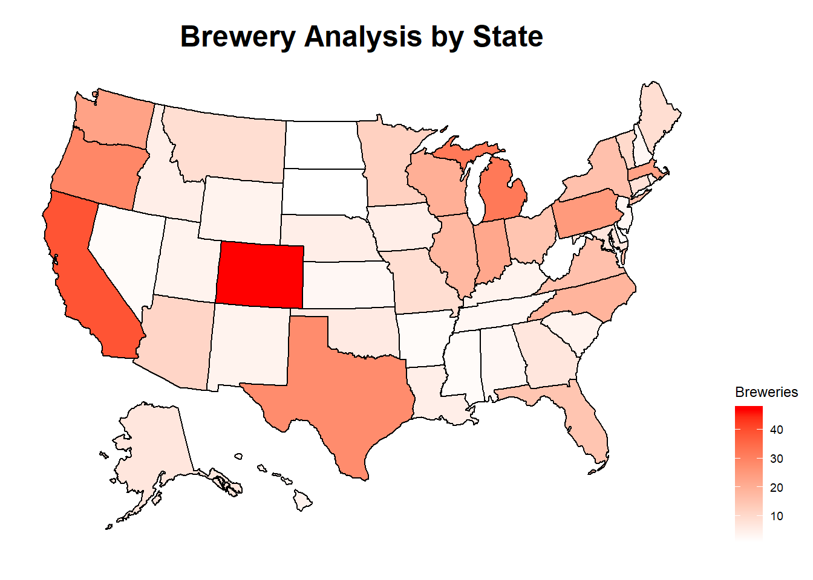
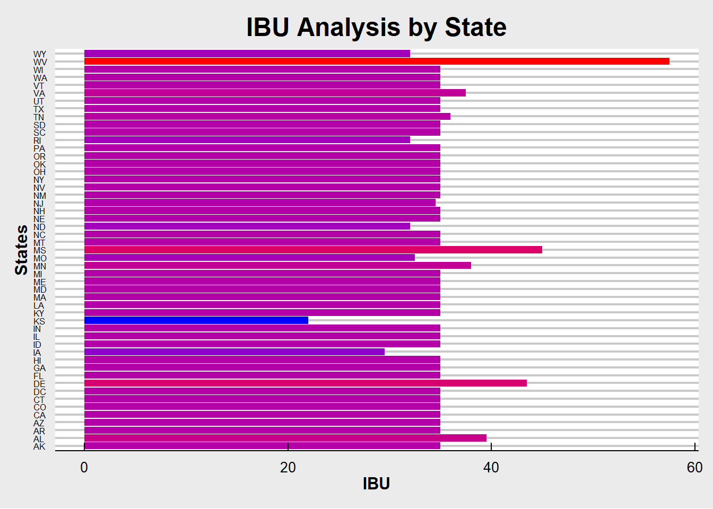
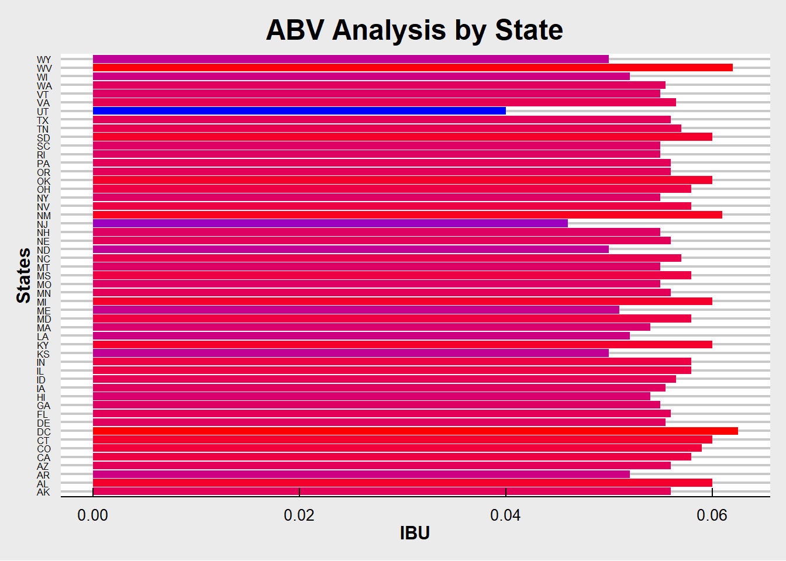
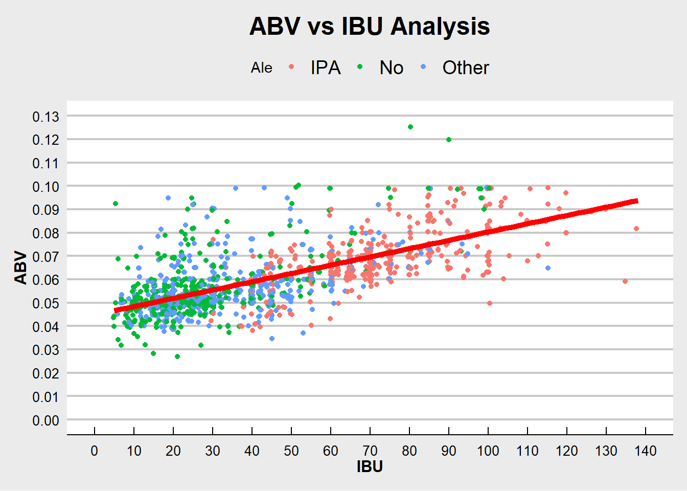
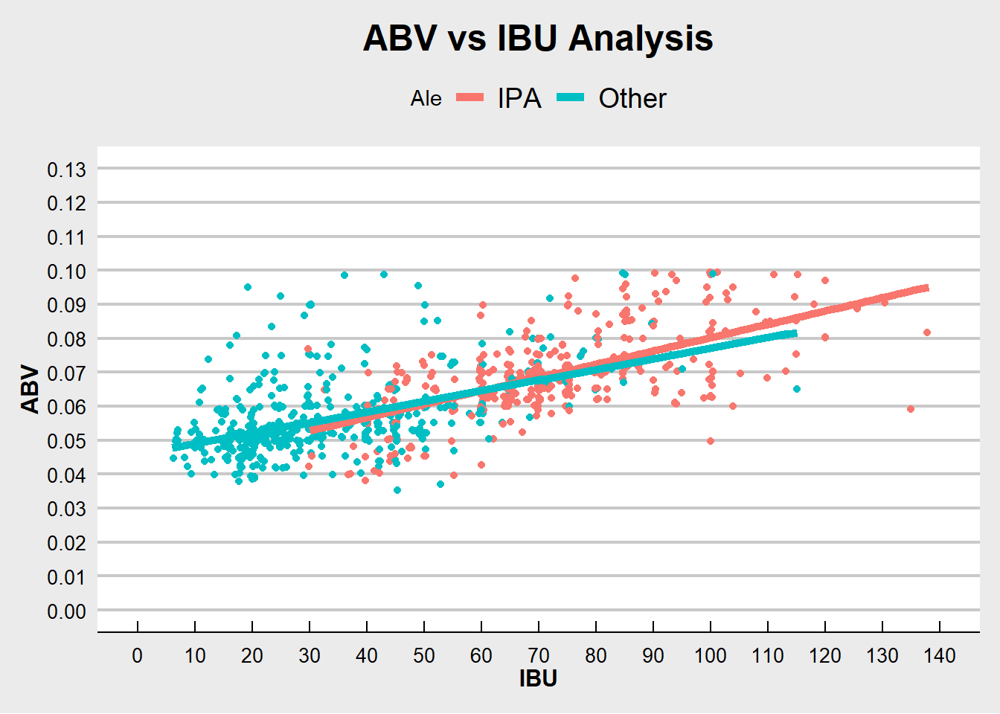
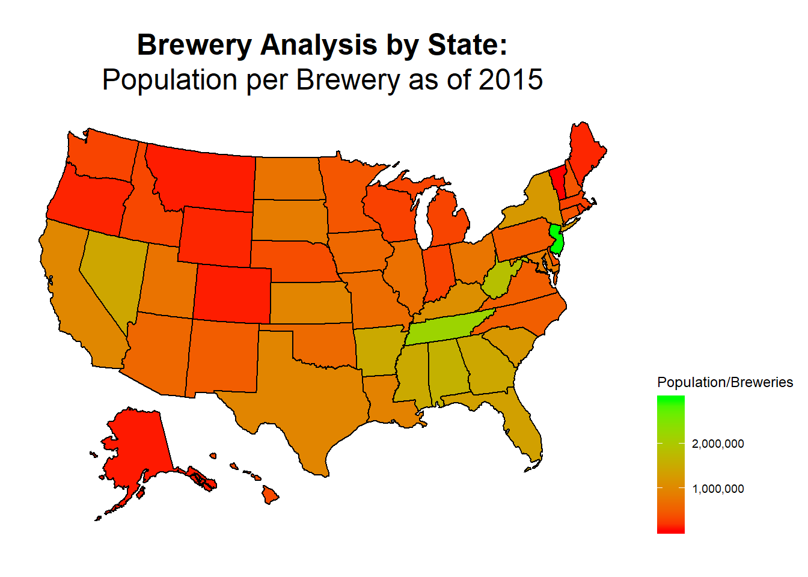
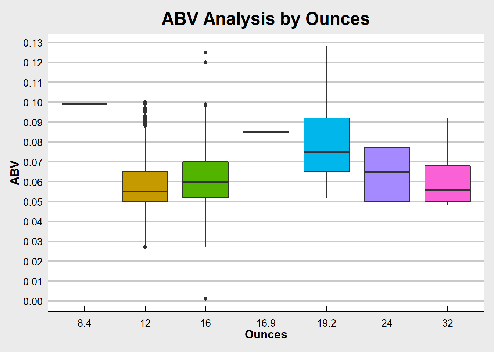

# Unit 8: Beer Analysis for Budweiser
# Read dataset
# Some fields (State in Breweries) start with spaces, so remove them
url <- "https://raw.githubusercontent.com/ERoske/MSDS-6306/master/"
beers <- read.csv(paste0(url,"Beers.csv"), strip.white=TRUE, sep=",")
breweries <- read.csv(paste0(url,"Breweries.csv"), strip.white=TRUE, sep=",")
beers$Ounces <- as.factor(beers$Ounces)
# Add variables
# Ale, IPA, or neither
beers$Ale <- "No"
beers$Ale[grep("Ale", beers$Style)] <- "Other"
beers$Ale[grep("IPA", beers$Style)] <- "IPA"sum(is.na(beers$ABV))## [1] 62sum(is.na(beers$IBU))## [1] 1005sum(beers$Style=="")## [1] 5beers$ABV[is.na(beers$ABV)] <- median(beers$ABV, na.rm=TRUE)
beers$IBU[is.na(beers$IBU)] <- median(beers$IBU, na.rm=TRUE)
beers$Style[beers$Style==""] <- "Other"state_table <- as.data.frame(table(breweries$State))
state_summary <- merge(statepop, state_table, by.x="abbr", by.y="Var1")
state_summary$PerCapita <- round(state_summary$pop_2015 / state_summary$Freq)# Table: Brewery Count
knitr::kable(state_table,
caption = "Breweries present in each state")| Var1 | Freq |
|---|---|
| AK | 7 |
| AL | 3 |
| AR | 2 |
| AZ | 11 |
| CA | 39 |
| CO | 47 |
| CT | 8 |
| DC | 1 |
| DE | 2 |
| FL | 15 |
| GA | 7 |
| HI | 4 |
| IA | 5 |
| ID | 5 |
| IL | 18 |
| IN | 22 |
| KS | 3 |
| KY | 4 |
| LA | 5 |
| MA | 23 |
| MD | 7 |
| ME | 9 |
| MI | 32 |
| MN | 12 |
| MO | 9 |
| MS | 2 |
| MT | 9 |
| NC | 19 |
| ND | 1 |
| NE | 5 |
| NH | 3 |
| NJ | 3 |
| NM | 4 |
| NV | 2 |
| NY | 16 |
| OH | 15 |
| OK | 6 |
| OR | 29 |
| PA | 25 |
| RI | 5 |
| SC | 4 |
| SD | 1 |
| TN | 3 |
| TX | 28 |
| UT | 4 |
| VA | 16 |
| VT | 10 |
| WA | 23 |
| WI | 20 |
| WV | 1 |
| WY | 4 |
# Graph: Brewery Count
plot_usmap(data=state_summary, values="Freq", color="black") +
scale_fill_continuous(
low="white", high="red", name="Breweries", label=scales::comma
) +
theme(legend.position="right") +
labs(title="Brewery Analysis by State") +
theme(plot.title=element_text(size=18, hjust=0.5, face="bold"))
merged <- merge(beers, breweries, by.x="Brewery_id", by.y="Brew_ID")
names(merged)[1] <- 'Brewery_ID'
names(merged)[2] <- 'Beer_Name'
names(merged)[9] <- 'Brewery_Name'
# Print first 6 and last 6 rows of the merged file
#head(merged, n=6)
#tail(merged, n=6)
data <- rbind(head(merged, n=6),
tail(merged, n=6))knitr::kable(data,
caption = "Merged Beer/Brewery Data")| Brewery_ID | Beer_Name | Beer_ID | ABV | IBU | Style | Ounces | Ale | Brewery_Name | City | State | |
|---|---|---|---|---|---|---|---|---|---|---|---|
| 1 | 1 | Get Together | 2692 | 0.045 | 50 | American IPA | 16 | IPA | NorthGate Brewing | Minneapolis | MN |
| 2 | 1 | Maggie’s Leap | 2691 | 0.049 | 26 | Milk / Sweet Stout | 16 | No | NorthGate Brewing | Minneapolis | MN |
| 3 | 1 | Wall’s End | 2690 | 0.048 | 19 | English Brown Ale | 16 | Other | NorthGate Brewing | Minneapolis | MN |
| 4 | 1 | Pumpion | 2689 | 0.060 | 38 | Pumpkin Ale | 16 | Other | NorthGate Brewing | Minneapolis | MN |
| 5 | 1 | Stronghold | 2688 | 0.060 | 25 | American Porter | 16 | No | NorthGate Brewing | Minneapolis | MN |
| 6 | 1 | Parapet ESB | 2687 | 0.056 | 47 | Extra Special / Strong Bitter (ESB) | 16 | No | NorthGate Brewing | Minneapolis | MN |
| 2405 | 556 | Pilsner Ukiah | 98 | 0.055 | 35 | German Pilsener | 12 | No | Ukiah Brewing Company | Ukiah | CA |
| 2406 | 557 | Heinnieweisse Weissebier | 52 | 0.049 | 35 | Hefeweizen | 12 | No | Butternuts Beer and Ale | Garrattsville | NY |
| 2407 | 557 | Snapperhead IPA | 51 | 0.068 | 35 | American IPA | 12 | IPA | Butternuts Beer and Ale | Garrattsville | NY |
| 2408 | 557 | Moo Thunder Stout | 50 | 0.049 | 35 | Milk / Sweet Stout | 12 | No | Butternuts Beer and Ale | Garrattsville | NY |
| 2409 | 557 | Porkslap Pale Ale | 49 | 0.043 | 35 | American Pale Ale (APA) | 12 | Other | Butternuts Beer and Ale | Garrattsville | NY |
| 2410 | 558 | Urban Wilderness Pale Ale | 30 | 0.049 | 35 | English Pale Ale | 12 | Other | Sleeping Lady Brewing Company | Anchorage | AK |
state_medians <-
merged %>%
group_by(State) %>%
dplyr::summarise(IBU = median(IBU),
ABV = median(ABV))
state_summary <- merge(state_summary, state_medians, by.x="abbr", by.y="State")
## Print a table with ABV and then IBU for each state.
knitr::kable(state_summary,
caption = "Median Alcohol Content and IBU for each state")| abbr | fips | full | pop_2015 | Freq | PerCapita | IBU | ABV |
|---|---|---|---|---|---|---|---|
| AK | 02 | Alaska | 738432 | 7 | 105490 | 35.0 | 0.0560 |
| AL | 01 | Alabama | 4858979 | 3 | 1619660 | 39.5 | 0.0600 |
| AR | 05 | Arkansas | 2978204 | 2 | 1489102 | 35.0 | 0.0520 |
| AZ | 04 | Arizona | 6828065 | 11 | 620733 | 35.0 | 0.0560 |
| CA | 06 | California | 39144818 | 39 | 1003713 | 35.0 | 0.0580 |
| CO | 08 | Colorado | 5456574 | 47 | 116097 | 35.0 | 0.0590 |
| CT | 09 | Connecticut | 3590886 | 8 | 448861 | 35.0 | 0.0600 |
| DC | 11 | District of Columbia | 672228 | 1 | 672228 | 35.0 | 0.0625 |
| DE | 10 | Delaware | 945934 | 2 | 472967 | 43.5 | 0.0555 |
| FL | 12 | Florida | 20271272 | 15 | 1351418 | 35.0 | 0.0560 |
| GA | 13 | Georgia | 10214860 | 7 | 1459266 | 35.0 | 0.0550 |
| HI | 15 | Hawaii | 1431603 | 4 | 357901 | 35.0 | 0.0540 |
| IA | 19 | Iowa | 3123899 | 5 | 624780 | 29.5 | 0.0555 |
| ID | 16 | Idaho | 1654930 | 5 | 330986 | 35.0 | 0.0565 |
| IL | 17 | Illinois | 12859995 | 18 | 714444 | 35.0 | 0.0580 |
| IN | 18 | Indiana | 6619680 | 22 | 300895 | 35.0 | 0.0580 |
| KS | 20 | Kansas | 2911641 | 3 | 970547 | 22.0 | 0.0500 |
| KY | 21 | Kentucky | 4425092 | 4 | 1106273 | 35.0 | 0.0600 |
| LA | 22 | Louisiana | 4670724 | 5 | 934145 | 35.0 | 0.0520 |
| MA | 25 | Massachusetts | 6794422 | 23 | 295410 | 35.0 | 0.0540 |
| MD | 24 | Maryland | 6006401 | 7 | 858057 | 35.0 | 0.0580 |
| ME | 23 | Maine | 1329328 | 9 | 147703 | 35.0 | 0.0510 |
| MI | 26 | Michigan | 9922576 | 32 | 310080 | 35.0 | 0.0600 |
| MN | 27 | Minnesota | 5489594 | 12 | 457466 | 38.0 | 0.0560 |
| MO | 29 | Missouri | 6083672 | 9 | 675964 | 32.5 | 0.0550 |
| MS | 28 | Mississippi | 2992333 | 2 | 1496166 | 45.0 | 0.0580 |
| MT | 30 | Montana | 1032949 | 9 | 114772 | 35.0 | 0.0550 |
| NC | 37 | North Carolina | 10042802 | 19 | 528569 | 35.0 | 0.0570 |
| ND | 38 | North Dakota | 756927 | 1 | 756927 | 32.0 | 0.0500 |
| NE | 31 | Nebraska | 1896190 | 5 | 379238 | 35.0 | 0.0560 |
| NH | 33 | New Hampshire | 1330608 | 3 | 443536 | 35.0 | 0.0550 |
| NJ | 34 | New Jersey | 8958013 | 3 | 2986004 | 34.5 | 0.0460 |
| NM | 35 | New Mexico | 2085109 | 4 | 521277 | 35.0 | 0.0610 |
| NV | 32 | Nevada | 2890845 | 2 | 1445422 | 35.0 | 0.0580 |
| NY | 36 | New York | 19795791 | 16 | 1237237 | 35.0 | 0.0550 |
| OH | 39 | Ohio | 11613423 | 15 | 774228 | 35.0 | 0.0580 |
| OK | 40 | Oklahoma | 3911338 | 6 | 651890 | 35.0 | 0.0600 |
| OR | 41 | Oregon | 4028977 | 29 | 138930 | 35.0 | 0.0560 |
| PA | 42 | Pennsylvania | 12802503 | 25 | 512100 | 35.0 | 0.0560 |
| RI | 44 | Rhode Island | 1056298 | 5 | 211260 | 32.0 | 0.0550 |
| SC | 45 | South Carolina | 4896146 | 4 | 1224036 | 35.0 | 0.0550 |
| SD | 46 | South Dakota | 858469 | 1 | 858469 | 35.0 | 0.0600 |
| TN | 47 | Tennessee | 6600299 | 3 | 2200100 | 36.0 | 0.0570 |
| TX | 48 | Texas | 27469114 | 28 | 981040 | 35.0 | 0.0560 |
| UT | 49 | Utah | 2995919 | 4 | 748980 | 35.0 | 0.0400 |
| VA | 51 | Virginia | 8382993 | 16 | 523937 | 37.5 | 0.0565 |
| VT | 50 | Vermont | 626042 | 10 | 62604 | 35.0 | 0.0550 |
| WA | 53 | Washington | 7170351 | 23 | 311754 | 35.0 | 0.0555 |
| WI | 55 | Wisconsin | 5771337 | 20 | 288567 | 35.0 | 0.0520 |
| WV | 54 | West Virginia | 1844128 | 1 | 1844128 | 57.5 | 0.0620 |
| WY | 56 | Wyoming | 586107 | 4 | 146527 | 32.0 | 0.0500 |
# Graph IBUs and ABVs
# IBU
ggplot(state_summary,
aes(x=abbr,
y=IBU,
fill=IBU)) +
geom_bar(stat="identity") +
scale_fill_gradient(low="blue", high="red") +
labs(x="States",
y="IBU",
title="IBU Analysis by State") +
theme_economist_white() +
theme(legend.position="none",
plot.title=element_text(size=18, hjust=0.5, face="bold"),
axis.title.x=element_text(size=12, face="bold"),
axis.title.y=element_text(size=12, face="bold"),
axis.text.x=element_text(size=10),
axis.text.y=element_text(size=6),
) +
coord_flip()
# ABV
ggplot(state_summary,
aes(x=abbr,
y=ABV,
fill=ABV)) +
geom_bar(stat="identity") +
scale_fill_gradient(low="blue", high="red") +
labs(x="States",
y="IBU",
title="ABV Analysis by State") +
theme_economist_white() +
theme(legend.position="none",
plot.title=element_text(size=18, hjust=0.5, face="bold"),
axis.title.x=element_text(size=12, face="bold"),
axis.title.y=element_text(size=12, face="bold"),
axis.text.x=element_text(size=10),
axis.text.y=element_text(size=6),
) +
coord_flip()
paste("Top ABV State:",
state_summary[order(-state_summary$ABV),"abbr"][1])## [1] "Top ABV State: DC"paste("Top IBU State:",
state_summary[order(-state_summary$IBU),"abbr"][1])## [1] "Top IBU State: WV"# All Styles
MergedClean <- merged %>%
filter(!ABV==median(beers$ABV, na.rm=TRUE) &
!IBU==median(beers$IBU, na.rm=TRUE))
ggplot(MergedClean, aes(x=IBU, y=ABV, color=Ale)) +
scale_x_continuous(name="IBU", breaks=seq(0,140,by=10), limits=c(0, 140)) +
scale_y_continuous(name="ABV", breaks=seq(0,0.13,by=.01), limits=c(0, 0.13)) +
ggtitle("ABV vs IBU Analysis") +
geom_point(position="jitter") +
geom_smooth(color="red", size=2, se=FALSE, method="lm") +
#scale_y_continuous(name="ABV", breaks=seq(0.0,0.15,by=.01)) +
theme_economist_white() +
theme(plot.title=element_text(size=18, hjust=0.5, face="bold"),
axis.title.x=element_text(size=12, face="bold"),
axis.title.y=element_text(size=12, face="bold"),
axis.text.x=element_text(size=10),
axis.text.y=element_text(size=10),
)
# Ale comparisons
Ales <- MergedClean %>% filter(!Ale=="No")
ggplot(data=Ales, aes(x=IBU, y=ABV, color=Ale)) +
scale_x_continuous(name="IBU", breaks=seq(0,140,by=10), limits=c(0, 140)) +
scale_y_continuous(name="ABV", breaks=seq(0,0.13,by=.01), limits=c(0, 0.13)) +
ggtitle("ABV vs IBU Analysis") +
geom_point(position="jitter") +
geom_smooth(size=2, se=FALSE, method="lm") +
#scale_y_continuous(name="ABV", breaks=seq(0.0,0.15,by=.01)) +
theme_economist_white() +
theme(plot.title=element_text(size=18, hjust=0.5, face="bold"),
axis.title.x=element_text(size=12, face="bold"),
axis.title.y=element_text(size=12, face="bold"),
axis.text.x=element_text(size=10),
axis.text.y=element_text(size=10),
)
# kNN Classification
knnClassifications <-
knn.cv(Ales[,4:5],
Ales$Ale,
k=round(sqrt(nrow(Ales))))
(knnCM <- confusionMatrix(table(knnClassifications, Ales$Ale)))## Confusion Matrix and Statistics
##
##
## knnClassifications IPA Other
## IPA 288 65
## Other 96 425
##
## Accuracy : 0.8158
## 95% CI : (0.7885, 0.841)
## No Information Rate : 0.5606
## P-Value [Acc > NIR] : < 2e-16
##
## Kappa : 0.6228
##
## Mcnemar's Test P-Value : 0.01806
##
## Sensitivity : 0.7500
## Specificity : 0.8673
## Pos Pred Value : 0.8159
## Neg Pred Value : 0.8157
## Prevalence : 0.4394
## Detection Rate : 0.3295
## Detection Prevalence : 0.4039
## Balanced Accuracy : 0.8087
##
## 'Positive' Class : IPA
## plot_usmap(data=state_summary, values="PerCapita", color="black") +
scale_fill_continuous(
low="red", high="green", name="Population/Breweries", label=scales::comma
) +
theme(legend.position="right") +
labs(title="Brewery Analysis by State:",
subtitle="Population per Brewery as of 2015") +
theme(plot.title=element_text(size=18, hjust=0.5, face="bold"),
plot.subtitle=element_text(size=18, hjust=0.5),
)
```
Note that the echo = FALSE parameter was added to the code chunk to prevent printing of the R code that generated the plot.
Comment on the summary statistics and distribution of the ABV variable.
